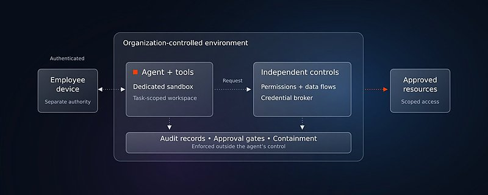
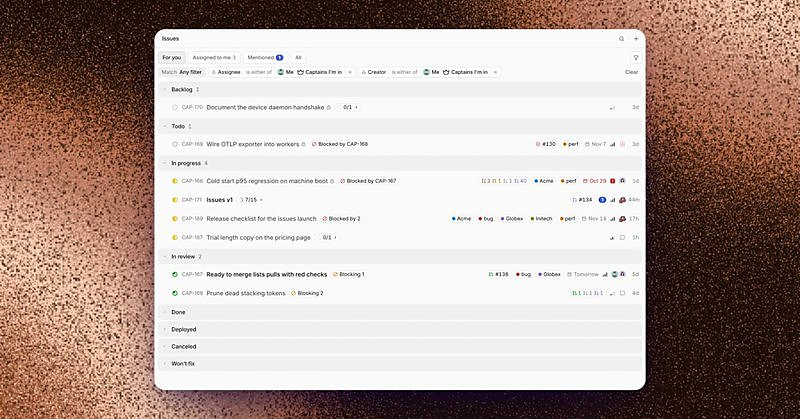

AI 日报 · 11月4日
Agent 进入真实工作流，权限、证据与验收决定能走多远
OpenAI 展示模型参与硬件设计与仿真，同时承认制造约束仍需人工审查；Legora 访谈揭示法律 Agent 在无法查看客户数据时如何建立评测。GrapesJS 与 Builder 动态聚焦结构化工具和受控执行环境。
工程设计
法律 Agent
受控环境
浏览器工具
4
Builder 动态
3
今日上榜项目
2
官方原文
1
公开视频
今日要点
OpenAI 把模型带进机械、电路和仿真流程
11 月 3 日的研究文章展示 Astra 参与设备外壳、PCB 与软件设计，并与 Mazda 探索车身气动方案。但官方也说明，试制设备在制造公差、装配细节上仍需多轮人工审查；BenchCAD 2.0 分数只是内部任务指标。
Legora CTO 谈保密约束下的 Agent 改进
法律材料属于律所客户，产品团队不能随意查看实际工作轨迹。Jacob Lauritzen 在 Latent Space 访谈中介绍用模拟任务、律师参与评测及匿名化反馈重现问题；引用准确率的改善是其访谈案例，不代表整体法律工作的成功率。
深度对话
Legora CTO：保密数据之外，怎样测试法律 Agent
Latent Space 11 月 2 日发布对 Legora CTO Jacob Lauritzen 的访谈。以下依据原频道视频、节目页与 follow-builders 逐字稿整理；团队规模、准确率及产品能力为受访者自述。
用模拟案件替代真实客户轨迹
受访者称，客户文件的保密要求使团队无法直接读取完整使用轨迹；工程师与律师共同构造接近实际工作的评测环境。
把证据链当作产品能力
团队持续测试引文准确性。受访者举例称，一次模型更新使某项引用正确率从约 70% 提高到 99%；这是具体问题的经验，不能外推到所有案件。
模型选择服从任务和治理
Legora 为不同子任务选择不同模型，同时把搜索、文档编辑和表格审阅组合进律师的工作流。
律师仍负责判断与复核
访谈讨论初级岗位和计费方式的变化；受访者没有把法律专业人员的审查视为可以取消的步骤。
官方原文
官方原文：工程与网页编辑的 Agent 接口
OpenAI｜模型进入物理工程设计
文章介绍 CAD、PCB、仿真与制造图纸的试验性工作。两名成员在不到一周内完成测试设备设计，但可制造性仍需人工反复修订；与 Mazda 的合作仍处探索阶段。
GrapesJS｜用 WebMCP 暴露编辑器工具
GrapesJS 发布开源插件，让兼容的浏览器 Agent 以结构化工具检查和修改组件、样式及页面。官方强调 WebMCP 仍是实验性能力，浏览器支持有限，工具权限可由接入方筛选。
已检查 feeds.json 的四条 RSS；截至 11 月 4 日上午未见可核验的新文章。此处选用 11 月 3 日发布的官方原文，不把旧 RSS 条目冒充今日更新。
Builder 动态
让 Agent 有工具，也要给它权限边界
Amjad Masad｜任务级权限与组织控制
Replit CEO 主张把 Agent 放在组织控制的专用环境，只授予当前任务所需的资源。原帖配图把沙箱、凭据代理、审批与审计放在 Agent 控制范围之外；这是一种架构主张。

Garry Tan｜多线程协作的个人体验
Y Combinator CEO 称 Capy Captains 让他修复 issue 的吞吐量一夜提升约五倍，并强调跨 Captain 与子线程协调。五倍是个人自述，未给出独立测量；原帖引用了 Capy 0.7.0 的 Issues 界面。

Peter Yang｜好模型仍会被操作环境卡住
Peter 以自己修改文章为例，称 Gemini 的建议更合适，却需要手工粘贴到另一个能操作浏览器的工具里。他指出的是一次具体体验中的模型与执行环境脱节。
Guillermo Rauch｜关注网页里的结构化工具
Vercel CEO 转发 wterm 支持 WebMCP 的演示并表达看好。被引用的发布帖称，终端可选择暴露读取、输入和按键等工具，且支持只读模式；这不等于所有浏览器已原生支持。
GitHub Trending
并行开发、服务目录与本地测试


取 11 月 4 日 GitHub Trending 当时榜单，避开近三期重点项目。星标、分叉、语言和主题为本次 GitHub API 快照；项目能力按仓库自述，未独立测评。
今日思考
OpenAI 的硬件试验说明模型能加快设计迭代，但制造公差和装配仍要由工程师核验；Legora 的法律案例则把保密数据、证据引用与模拟评测连在一起。浏览器结构化工具和专用沙箱让 Agent 更容易执行，也更需要限定权限、记录依据与保留人工验收。今日一问：在你的工作流里，Agent 的输出从“看起来完成”到“可以交付”，还缺哪一项证据？
今天可做：选一个真实任务，列出 Agent 可调用的工具、可读取的数据、必须留存的结果和最终签字人；用一例失败任务试跑这些边界。
参考来源